Hilf Mabel Xiomara beim Neuanfang
Das Erdbeben vom 10. August hat ihr Haus in Circasia (Kolumbien) unbewohnbar gemacht. Das Haus ist verloren — die Schulden bei der Bank bleiben.
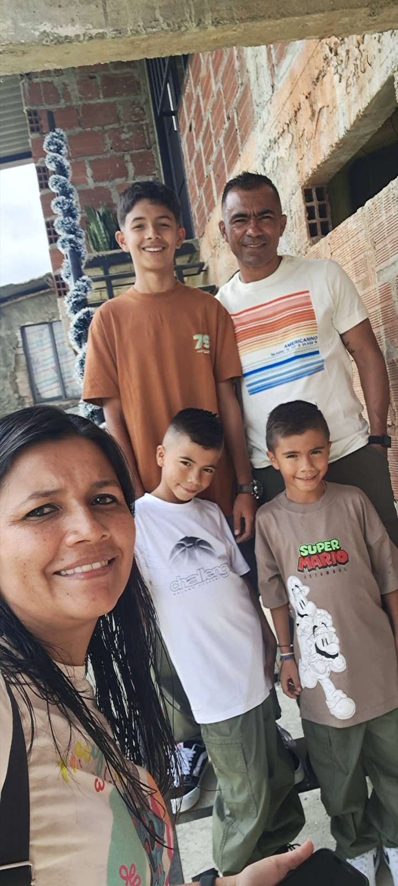
Diese Seite teilenWas passiert ist
Hallo — hier schreibt Natalia, Mabel Xiomaras Cousine, gemeinsam mit Familie und engen Freunden.
Am 10. August 2026 um 7:34 Uhr morgens hat das Erdbeben der Stärke 7,4, das Kolumbien erschütterte, das Haus von Mabel Xiomara im Viertel La Pilastra in Circasia, Quindío schwer beschädigt. Sie lebte dort mit ihren drei Söhnen — Matías (14) und den Zwillingen Gabriel und Joel (10) — und ihrem Partner Arlex, dem Vater der Jungen.
Es ist das Haus, das Mabel Xiomara vor gerade einmal zwei Jahren gebaut hat — mit ihren Ersparnissen und zwei Krediten. Die Familie wohnte im Obergeschoss, während das Erdgeschoss noch im Bau war. Das Erdbeben hat tragende Stützen und Wände dieses Erdgeschosses zerstört. Nach der technischen Begutachtung durch den städtischen Rat für Katastrophenrisikomanagement hat die Stadtverwaltung Mabel Xiomara offiziell mitgeteilt, dass das Haus für UNBEWOHNBAR erklärt wurde und geräumt werden musste. Sie können nicht zurück — und die Stadtverwaltung hat ihnen auch mitgeteilt, dass sie auf dem Grundstück nicht wieder bauen dürfen. Die Familie muss woanders neu anfangen.
Die Kredite waren frei verwendbare Darlehen, ohne Versicherung gegen Naturkatastrophen. Mabel Xiomara muss weiterhin 1.824.000 COP (≈ 500 €) im Monat zahlen — für ein Haus, in dem sie nicht mehr wohnen kann. Die offene Schuld: 89,4 Millionen Pesos (≈ 24.600 €), verteilt auf zwei Kredite über rund 29 und 60 Millionen.
Heute schlafen alle fünf in einem einzigen Zimmer — im Haus von Mabel Xiomaras Großmutter.
Wer Mabel Xiomara ist
Viele von euch kennen sie: Seit über zehn Jahren sammelt Mabel Xiomara jeden Dezember Spenden bei Familie und Freunden, um Kindern mit Behinderungen der INFAC-Stiftung ein Weihnachtsgeschenk zu machen. Mehr als zehn Jahre lang hat sie für andere gesammelt. Jetzt bitten wir für sie — um die Schulden abzuzahlen, die unter den Trümmern geblieben sind, damit sie für ihre Söhne ohne diese Last ein neues Zuhause aufbauen kann.
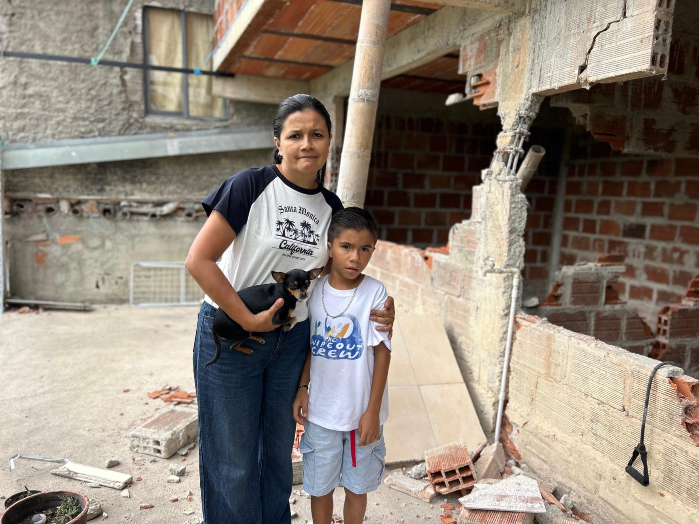
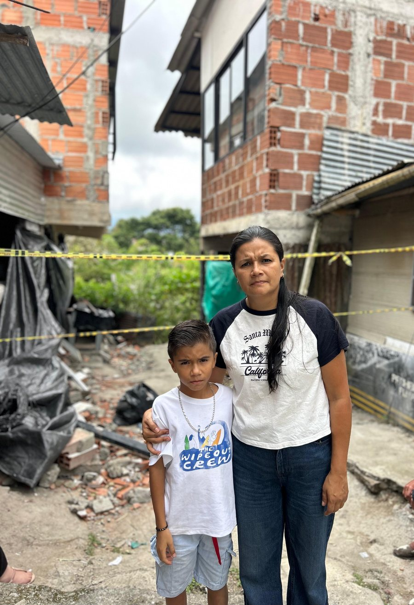
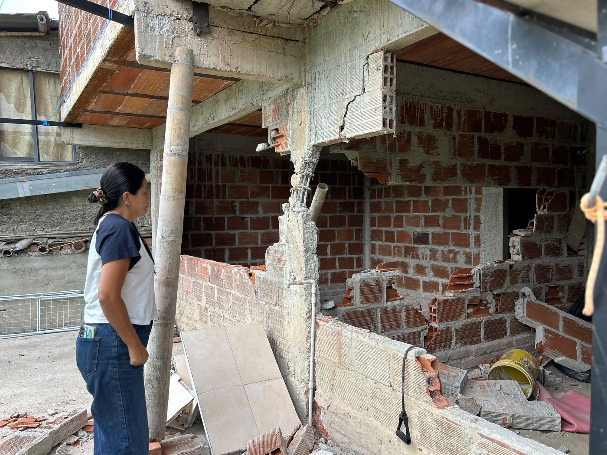
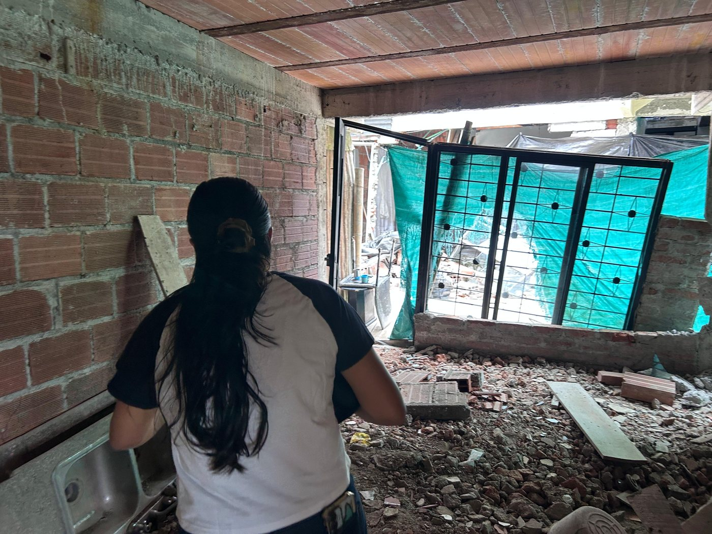
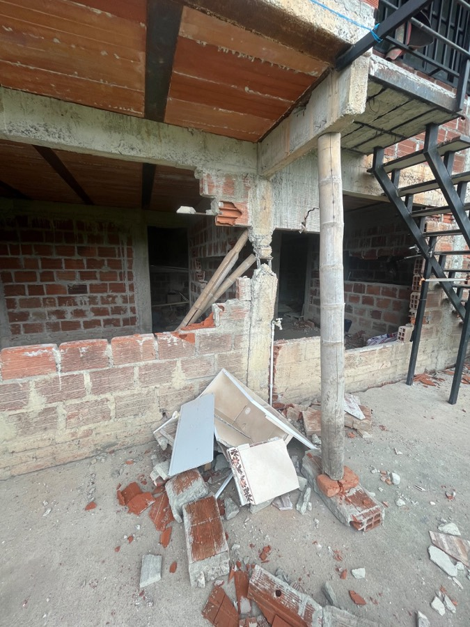
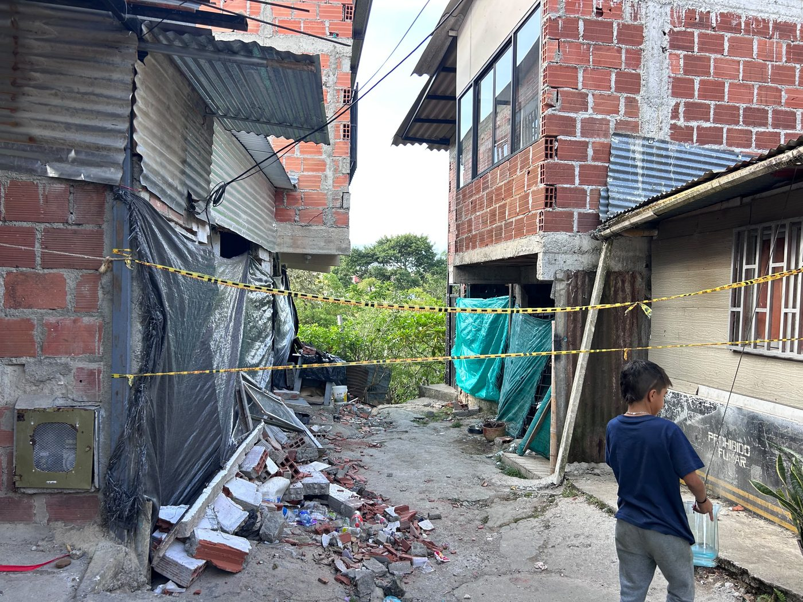
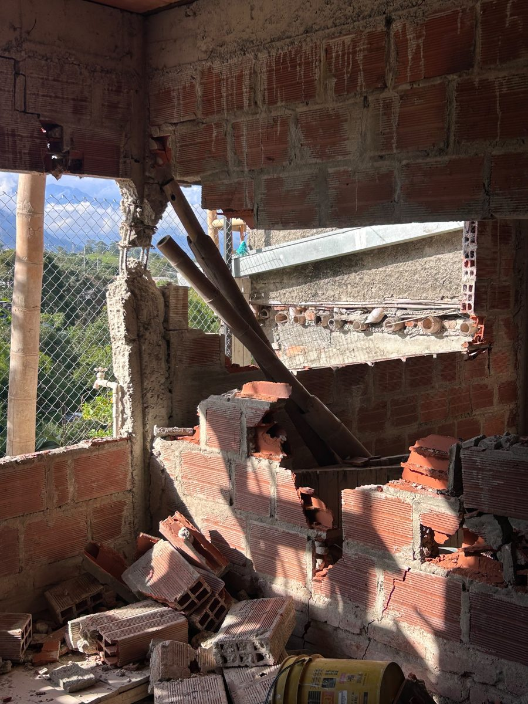
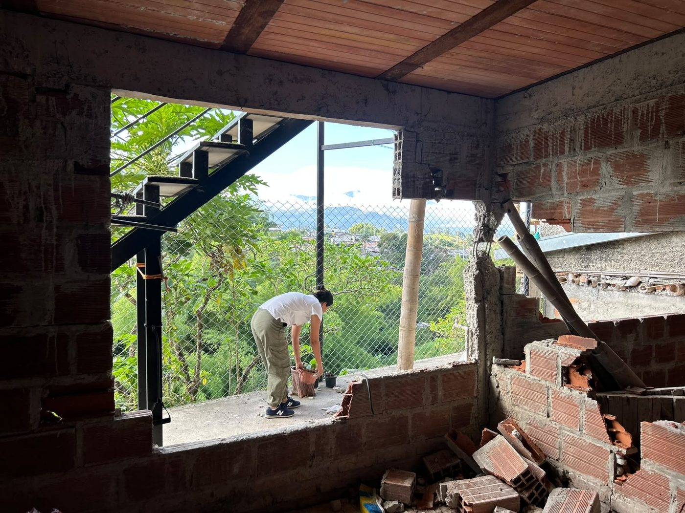
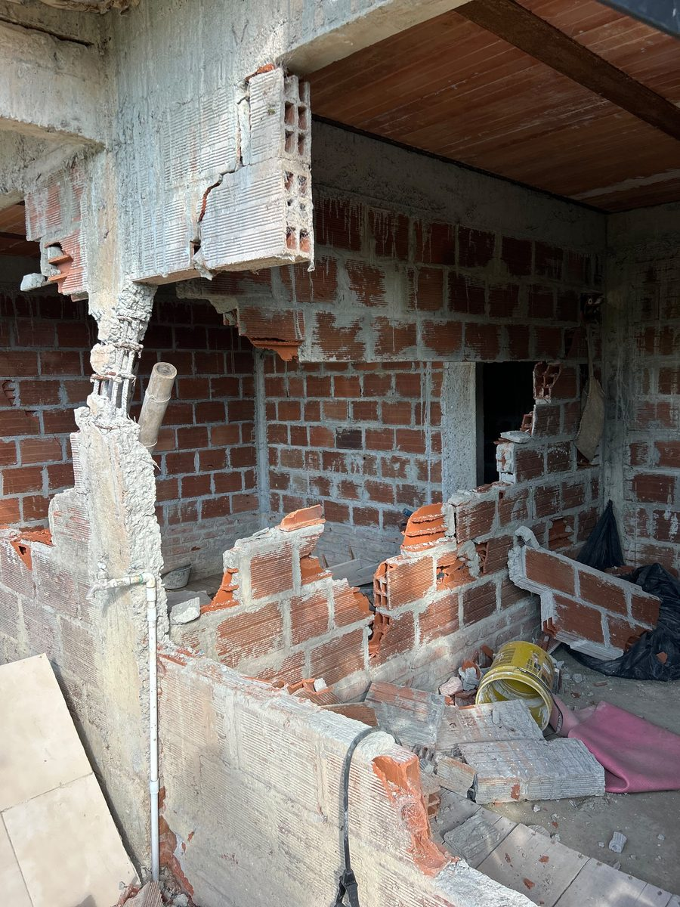
Wischen für mehr Fotos →
So kannst du spenden
Wähle deine Option. In Kolumbien geht das Geld direkt an die Familie (Bancolombia-Konto von Mabel Xiomara oder Nequi ihres Sohnes Matías); Spenden über PayPal, Banküberweisung und Alipay empfängt ihre Cousine Natalia, die alles an Mabel Xiomara weiterleitet und die Belege veröffentlicht. Jeder Beitrag zählt — gemeinsam schaffen wir das.
🌍 PayPal — aus jedem Land ›
Du kommst zum PayPal-Spendentopf von Natalia — sie ist dort als Organisatorin angegeben. Das ist richtig.
Über PayPal spendenPayPal akzeptiert EUR, USD, GBP, AUD und mehr. PayPal kann kein Geld auf kolumbianische Konten auszahlen; deshalb verwaltet Natalia, Mabel Xiomaras Cousine, den Spendentopf: Sie überweist alles Gesammelte auf Mabel Xiomaras Konto und veröffentlicht die Belege hier.
Schon gespendet? Tausend Dank! 💚 Diese Seite zu teilen ist so viel wert wie eine weitere Spende.
🇪🇺 Europa — Banküberweisung (EUR / SEPA) ›
Scanne den QR-Code mit deiner Banking-App (Sparkasse, Volksbank, ING, N26 …) — IBAN, Empfängerin und Verwendungszweck werden automatisch ausgefüllt. Am Handy: nutze stattdessen die beiden Kopier-Buttons.
Verwendungszweck: „Ayuda Mabel Xiomara“ · BIC (falls nötig): NTSBDEB1XXX. Das Konto führt Natalia, Mabel Xiomaras Cousine — sie leitet alles an Mabel Xiomaras Konto weiter und veröffentlicht die Belege hier.
Schon gespendet? Tausend Dank! 💚 Diese Seite zu teilen ist so viel wert wie eine weitere Spende.
🇦🇺 Australien — Überweisung (AUD) ›
Lokale AUD-Überweisung über Wise — ohne Kartengebühren. Natalia empfängt sie und leitet alles an Mabel Xiomaras Konto weiter; die Belege erscheinen hier.
BSB kopieren Kontonummer kopieren Empfängernamen kopierenBank: Wise · Deine Bank zeigt ggf. den Namen der Kontoinhaberin zur Bestätigung — das ist richtig.
Schon gespendet? Tausend Dank! 💚 Diese Seite zu teilen ist so viel wert wie eine weitere Spende.
🇬🇧 Großbritannien — Überweisung (GBP) ›
Lokale GBP-Überweisung über Wise — ohne Kartengebühren. Natalia empfängt sie und leitet alles an Mabel Xiomaras Konto weiter; die Belege erscheinen hier.
Sort Code kopieren Kontonummer kopieren Empfängernamen kopierenBank: Wise · Deine Bank bestätigt den Empfängernamen — das ist richtig.
Schon gespendet? Tausend Dank! 💚 Diese Seite zu teilen ist so viel wert wie eine weitere Spende.
🇺🇸 USA — Überweisung (USD) ›
Lokale USD-Überweisung (ACH oder Wire) über Wise — ohne Kartengebühren. Natalia empfängt sie und leitet alles an Mabel Xiomaras Konto weiter; die Belege erscheinen hier.
Routing Number kopieren Kontonummer kopieren Empfängernamen kopierenBank: Wise · Kontotyp: Checking · Deine Bank zeigt ggf. den Namen der Kontoinhaberin zur Bestätigung — das ist richtig.
Schon gespendet? Tausend Dank! 💚 Diese Seite zu teilen ist so viel wert wie eine weitere Spende.
🇨🇴 Kolumbien — Bancolombia · Bre-B · Nequi ›
06983944823
Auf den Namen Mabel Xiomara Moreno Vallejo · von Bancolombia, Nequi oder jeder Bank
@mabel065
Über die App jeder kolumbianischen Bank · geht auf Mabels Bancolombia-Konto
305 405 3098
Auf den Namen Matías Bedoya Moreno, Mabels Sohn · über die Nequi-App
Prüfe den Namen vor dem Bestätigen: Bancolombia-Konto und Bre-B-Schlüssel laufen auf Mabel Xiomara Moreno Vallejo, das Nequi-Konto auf Matías Bedoya Moreno, ihren Sohn. Mabels eigenes Nequi-Konto ist vorübergehend gesperrt (laut Nequi bis zum 1. September); falls eine Überweisung an Mabels Nequi nicht durchging, nutze bitte eine dieser Optionen. Das Geld geht direkt an die Familie. Falls deine Bank die Ausweisnummer der Kontoinhaberin verlangt, schreib uns. Je 456.000 COP decken eine Woche der Monatsrate; 1.824.000 COP den ganzen Monat.
Schon gespendet? Tausend Dank! 💚 Diese Seite zu teilen ist so viel wert wie eine weitere Spende.
🇨🇳 China — Alipay（支付宝）›
In China? Scanne den Code mit Alipay (zum Vergrößern antippen). Die Spenden empfängt Natalia, Mabel Xiomaras Cousine, die in China lebt — deshalb kann sie sie empfangen — und alles nach Kolumbien überweist; die Belege erscheinen unter „Neuigkeiten“.
Beim Scannen siehst du den Namen *NATALIA — erscheint ein anderer Name, zahle nicht.
Du möchtest lieber auf anderem Weg spenden (z. B. WeChat)? Schreib uns — wir schicken dir die Daten.
Transparenz
- Spenden in Kolumbien gehen direkt an die Familie — auf Mabel Xiomaras Bancolombia-Konto oder das Nequi ihres Sohnes Matías — ohne Umwege.
- Spenden über PayPal, Banküberweisung und Alipay empfängt Natalia (ihre Cousine, die in China lebt), die alles an Mabel Xiomara weiterleitet und die Belege auf dieser Seite veröffentlicht.
- Die Schuld besteht aus zwei Krediten mit Raten von 608.000 und 1.216.000 COP im Monat — zusammen 1.824.000 COP; Gesamtsaldo: 89,4 Mio. COP.
- Warum zahlt keine Versicherung? Weil es frei verwendbare Kredite sind, keine Hypothek: Anders als kolumbianische Hypotheken — die per Gesetz eine Feuer- und Erdbebenversicherung enthalten — haben diese Kredite keinerlei Absicherung auf das Haus. Es gibt keine Police, die man aktivieren könnte.
- Warum eine eigene Seite und nicht GoFundMe? GoFundMe kann kein Geld nach Kolumbien auszahlen, und Plattformen nehmen Gebühren — diese Seite hat die Familie selbst gebaut, ohne Abzüge.
- Unten siehst du die offizielle Mitteilung des städtischen Rats für Katastrophenrisikomanagement: Haus unbewohnbar — Räumung.
- Wir veröffentlichen Neuigkeiten mit Belegen für jede Zahlung an die Bank.
- Fragen? Kontakt-E-Mail anzeigen
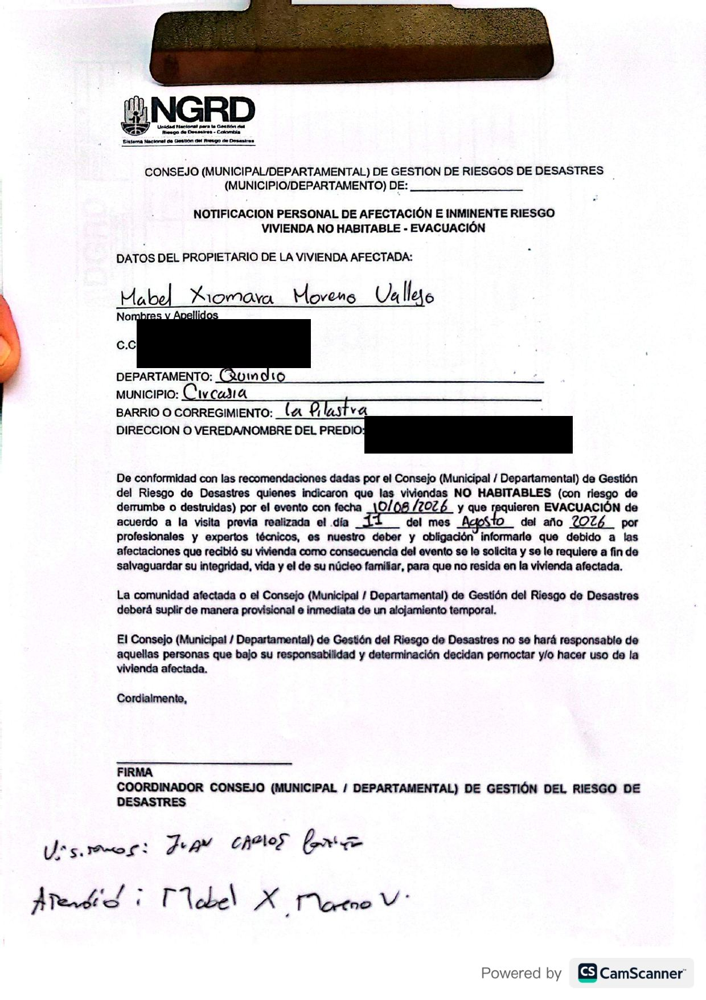
Offizielle Mitteilung des Rats für Katastrophenrisikomanagement„Haus unbewohnbar — Räumung“ · nur Ausweisnummer und Adresse geschwärzt · zum Ansehen antippen (auf Spanisch)
Neuigkeiten
Nequi hat das Konto von Mabel Xiomara vorübergehend gesperrt — laut Nequi bis zum 1. September. Was dort schon eingegangen ist, liegt weiter auf dem Konto und ist im Gesamtstand mitgezählt; neue Überweisungen kann es aber vorerst nicht empfangen. Deshalb stehen ab heute unter So kannst du spenden für Kolumbien: das Bancolombia-Sparkonto von Mabel Xiomara (06983944823, empfohlen — auch per Bre-B mit ihrem Schlüssel @mabel065 aus jeder Bank-App) und das Nequi ihres Sohnes Matías Bedoya Moreno (305 405 3098). Falls eine Überweisung an Mabels Nequi nicht durchging, nutze bitte einen dieser Wege. Sobald Nequi die Sperre aufhebt, melden wir es hier. Danke fürs Weiterteilen. 💚
Eine Woche nach dem Erdbeben und fünf Tage nach dem Start haben wir 47.042.000 COP (≈ 12.960 €) gesammelt — 52,6 % der Schuld. Menschen in Kolumbien, Deutschland, Australien, China und darüber hinaus haben gespendet, geteilt und geschrieben. Mabel Xiomara, Arlex und die Jungs fehlen die Worte — uns auch. Danke von Herzen.
Und jetzt der schwere Teil: es fehlen noch 42,4 Millionen COP (≈ 11.670 €). Die Bank wartet nicht — jeden Monat zahlt die Familie 1.824.000 COP für ein Haus, das es nicht mehr gibt. Die ersten Tage haben die Menschen erreicht, die Mabel am nächsten stehen; um das Ziel zu schaffen, müssen wir jetzt Menschen erreichen, die die Geschichte noch nicht kennen. Nächstes Ziel: zwei Drittel der Schuld (59,6 Millionen COP) — für dieses Ziel fehlen noch 12,6 Millionen COP (≈ 3.460 €).
Wenn du schon gespendet hast, bitten wir dich heute um etwas anderes: Leite diese Seite an eine einzige Person weiter, die sie noch nicht gesehen hat. Deine Nachricht kommt an, wo wir nicht hinkommen. 💚
In den ersten drei Tagen haben Menschen in fünf Ländern 36.035.000 COP gesammelt — 40 % der Schuld und 19 der 49 Kreditraten. So verteilt sich die Hilfe nach Währung:
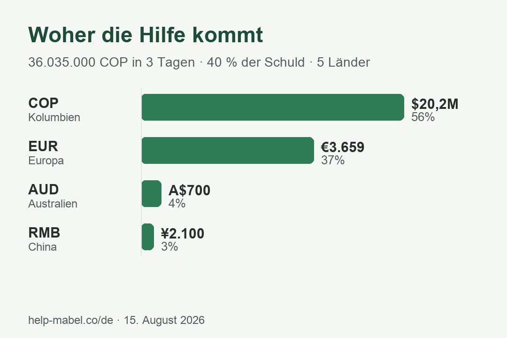
Jeder Beitrag — von 20.000 COP über Nequi bis zu Überweisungen in Euro, australischen Dollar und Yuan — bringt Mabel Xiomara der Schuldenfreiheit näher. Noch 30 Raten. Weiter teilen. 💚
In weniger als 24 Stunden haben wir das erste Ziel von 15 Millionen COP erreicht — und übertroffen: Wir stehen bei 22.161.000 COP (≈ 6.100 €), dank Spenden aus Kolumbien (Nequi: 11,5 Mio.), Europa und Australien (PayPal: 2.416 € + Überweisungen: 250 €) und China (WeChat und Alipay: ¥2.100). Von Herzen danke an alle, die in fünf Ländern gespendet und geteilt haben. Jetzt gehen wir das ganze Ziel an: Mabel Xiomara von der gesamten Schuld zu befreien (89,4 Millionen COP) — das Erreichte deckt erst gut ein Viertel. Jede Spende und jedes Teilen macht weiter den Unterschied. 💚
Was für ein Start! Wir stehen bei 5.105.000 COP (≈ 1.400 €) — 34 % des ersten Ziels: 1.342 € über PayPal (inklusive der ersten Beiträge aus der Familie) und ¥500 über WeChat. Die Nequi-Spenden werden noch gezählt — Update folgt. Danke an alle, die gespendet und geteilt haben! 💚
Es geht los! Familie und enge Freunde haben bereits die ersten 3.182.400 COP (≈ 880 €) gesammelt. Danke von Herzen — jeder Beitrag bringt Mabel Xiomara und ihre Familie einem schuldenfreien Neuanfang näher.
Du kannst nicht spenden? Teile die Seite
Teilen hilft genauso. Eine Nachricht von dir erreicht Menschen, die wir nicht erreichen.
📣 In deiner Story teilen (WhatsApp / Instagram) Auf WhatsApp teilen Auf WeChat teilen（微信） Link kopierenMabel Xiomara, Matías, Gabriel, Joel und Arlex danken dir. 💚